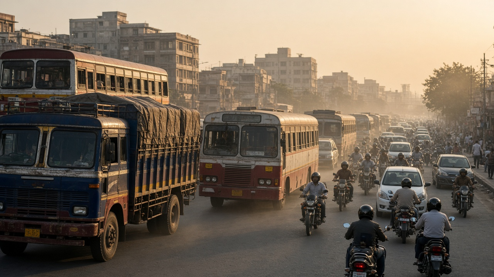
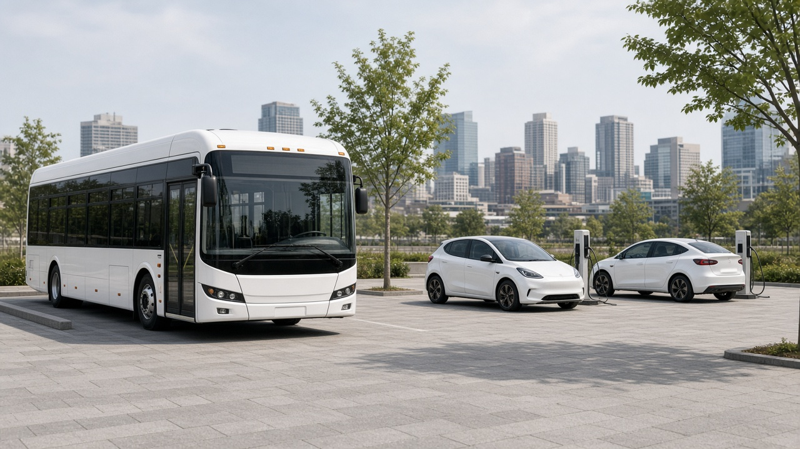
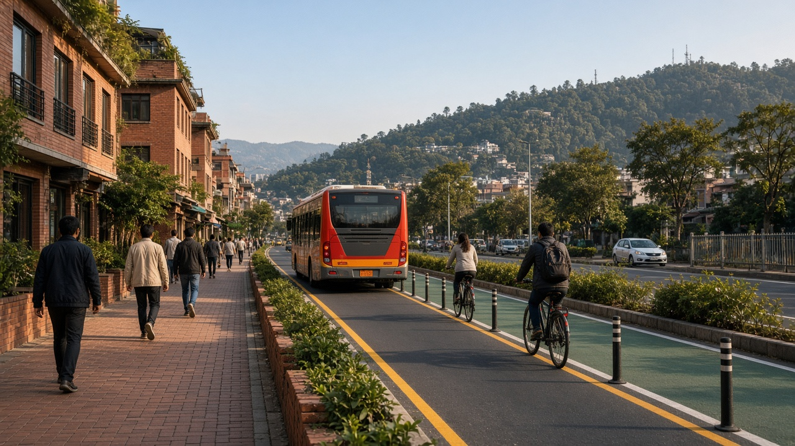

Transport Emissions and Vehicle Standards
Published on August 20, 2026

Transportation ranks among the largest sources of urban air pollution worldwide, releasing nitrogen oxides, carbon monoxide, volatile organic compounds, and fine particulate matter from gasoline and diesel combustion. Exhaust emissions arise from incomplete fuel burning in internal combustion engines, while non-exhaust sources include brake wear, tire abrasion, and resuspended road dust that contribute substantial PM10 loads along busy corridors. Congested traffic patterns amplify pollution because vehicles emit more per kilometer when idling, accelerating, and operating cold engines before catalytic converters reach efficient temperatures. Freight trucks, buses, and two-wheelers with older engines disproportionately affect air quality in developing cities where vehicle fleets turn over slowly.
Vehicle emission standards set legal limits on pollutants per distance traveled or per unit of energy consumed, driving technological improvements across the automotive industry. Successive Euro, Bharat Stage, and equivalent tiers require catalytic converters, diesel particulate filters, evaporative emission controls, and onboard diagnostics that detect malfunctioning systems. Fuel quality standards complement vehicle rules by reducing sulfur in diesel, which enables advanced aftertreatment and lowers sulfate particle formation. Electric vehicles eliminate tailpipe emissions entirely, though lifecycle impacts depend on electricity generation mix and battery manufacturing. Hybrid and plug-in hybrid designs reduce fuel consumption in stop-and-go urban driving while transitioning fleets toward zero-emission mobility.
Policy tools beyond standards accelerate clean transport adoption and protect vulnerable populations near roadways. Low-emission zones restrict the most polluting vehicles from city centers, while congestion pricing discourages unnecessary car trips and funds public transit expansion. Regular inspection and maintenance programs identify gross emitters that lack functioning pollution controls despite passing initial certification. Investing in bus rapid transit, electrified rail, cycling infrastructure, and pedestrian networks shifts mode share away from private cars. Integrated land-use planning that locates jobs, schools, and services within walkable distances reduces vehicle kilometers traveled and delivers sustained air quality improvements that single-technology fixes alone cannot achieve.

यातायात विश्वभर शहरी वायु प्रदूषणका प्रमुख स्रोतमध्ये पर्छ, जसले पेट्रोल र डिजेल दहनबाट नाइट्रोजन अक्साइड, कार्बन मोनोअक्साइड, अस्थिर कार्बनिक यौगिक र सूक्ष्म कण उत्सर्जन गर्छ। इन्जिनमा अपूर्ण इन्धन दहनबाट निकास उत्सर्जन हुन्छ, भने गैर-निकास स्रोतमा ब्रेक घिसाइ, टायर घिसाइ र पुन: उड्ने सडक धुलो समावेश छ जसले व्यस्त कुराहरूमा PM10 भार बढाउँछ। जाममा सवारी प्रति किलोमिटर बढी उत्सर्जन गर्छ किनभने रोकिएको, तीव्र गति बढाउने र चिसो इन्जिन अवस्थामा उत्प्रेरक परिवर्तक कुशल तापक्रममा नपुग्दासम्म उत्सर्जन बढ्छ। पुरानो इन्जिन भएका मालवाहक, बस र दुई पांग्रे सवारी विकासोन्मुख शहरमा वायु गुणस्तरमा असमान प्रभाव पार्छ।
सवारी उत्सर्जन मापदण्डले प्रदूषकको कानुनी सीमा तोक्छ, जसले अटोमोबाइल उद्योगमा प्रविधिगत सुधार ल्याउँछ। क्रमशः युरो, भारत स्टेज र समतुल्य चरणहरूले उत्प्रेरक परिवर्तक, डिजेल कण फिल्टर, वाष्प उत्सर्जन नियन्त्रण र बोर्डमा निदान प्रणाली अनिवार्य बनाउँछ। इन्धन गुणस्तर मापदण्डले डिजेलमा सल्फर घटाउँछ, जसले उन्नत उपचार र सल्फेट कण निर्माण कम गर्छ। विद्युतीय सवारीले निकास उत्सर्जन पूर्ण रूपमा हटाउँछ, तर जीवनचक्र प्रभाव विद्युत उत्पादन मिश्रण र ब्याट्री निर्माणमा निर्भर गर्छ। हाइब्रिड र प्लग-इन हाइब्रिडले शहरी यातायातमा इन्धन खपत घटाउँछ र शून्य-उत्सर्जन गतिशीलतातर्फ संक्रमण गर्छ।
मापदण्डभन्दा बाहिरका नीतिले स्वच्छ यातायात अपनाउन र सडक नजिकका संवेदनशील जनसंख्यालाई जोगाउँछ। कम-उत्सर्जन क्षेत्रले सबैभन्दा प्रदूषक सवारी शहर केन्द्रमा प्रतिबन्धित गर्छ, जबकि भीड मूल्य निर्धारणले अनावश्यक कार यात्रा कम गरी सार्वजनिक यातायात विस्तारमा कोष जुटाउँछ। नियमित निरीक्षण र मर्मतले बिग्रेको प्रदूषण नियन्त्रण भएका सवारी पहिचान गर्छ। बस द्रुत पारगमन, विद्युतीय रेल, साइकल र पैदल पूर्वाधारले निजी कार प्रयोग घटाउँछ। पैदल दूरीभित्र रोजगार, विद्यालय र सेवा राख्ने भू-उपयोग योजनाले सवारी किलोमिटर घटाउँछ र दिगो वायु गुणस्तर सुधार ल्याउँछ।

परिवहन विश्वभर शहरी वायु प्रदूषण के प्रमुख स्रोतों में है, जो पेट्रोल और डीज़ल दहन से नाइट्रोजन ऑक्साइड, कार्बन मोनोऑक्साइड, वाष्पशील कार्बनिक यौगिक और सूक्ष्म कण उत्सर्जित करता है। इंजन में अपूर्ण ईंधन दहन से निकास उत्सर्जन होता है, जबकि गैर-निकास स्रोतों में ब्रेक घिसाई, टायर घिसाई और पुनः उड़ती सड़क धूल शामिल है जो व्यस्त मार्गों पर PM10 भार बढ़ाती है। जाम में वाहन प्रति किलोमीटर अधिक उत्सर्जित करते हैं क्योंकि रुके, तेज़ गति बढ़ाने और ठंडे इंजन में उत्प्रेरक परिवर्तक कुशल तापमान तक न पहुँचने पर उत्सर्जन बढ़ता है। पुराने इंजन वाले मालवाहक, बसें और दोपहिया वाहन विकासशील शहरों में वायु गुणस्तर पर असमान प्रभाव डालते हैं।
वाहन उत्सर्जन मानक प्रदूषकों की कानूनी सीमा तय करते हैं, जिससे ऑटोमोबाइल उद्योग में तकनीकी सुधार होता है। क्रमशः यूरो, भारत स्टेज और समतुल्य चरण उत्प्रेरक परिवर्तक, डीज़ल कण फ़िल्टर, वाष्प उत्सर्जन नियंत्रण और बोर्ड पर निदान प्रणाली अनिवार्य करते हैं। ईंधन गुणस्तर मानक डीज़ल में सल्फर घटाकर उन्नत उपचार और सल्फेट कण निर्माण कम करते हैं। विद्युतीय वाहन निकास उत्सर्जन पूर्ण रूप से समाप्त करते हैं, पर जीवनचक्र प्रभाव बिजली उत्पादन मिश्रण और बैटरी निर्माण पर निर्भर है। हाइब्रिड और प्लग-इन हाइब्रिड शहरी परिवहन में ईंधन खपत घटाते और शून्य-उत्सर्जन गतिशीलता की ओर संक्रमण करते हैं।
मानकों से परे नीतियाँ स्वच्छ परिवहन अपनाने और सड़क के पास संवेदनशील आबादी की रक्षा करती हैं। कम-उत्सर्जन क्षेत्र सबसे प्रदूषक वाहनों को शहर केंद्र में प्रतिबंधित करते हैं, जबकि भीड़ मूल्य निर्धारण अनावश्यक कार यात्रा कम कर सार्वजनिक परिवहन विस्तार को धन देता है। नियमित निरीक्षण और रखरखाव खराब प्रदूषण नियंत्रण वाले वाहन पहचानते हैं। बस द्रुत पारगमन, विद्युतीय रेल, साइकिल और पैदल बुनियादी ढांचा निजी कार उपयोग घटाता है। पैदल दूरी में रोज़गार, स्कूल और सेवाएँ रखने वाली भू-उपयोग योजना वाहन किलोमीटर घटाकर स्थायी वायु गुणस्तर सुधार लाती है।